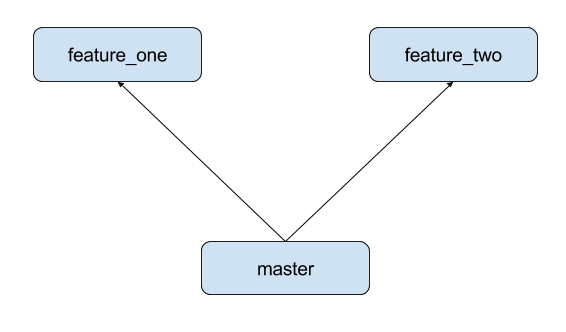
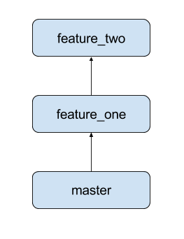

By James Heywood / @jdheywood
Studied computing at Staffs Uni, (a long, long time ago)
Have had a variety of roles since then including;
If your database is the foundation of your application, and your application code is under source control, then surely your database should be too right?
Legacy code base, old habits die hard
Lack of time, new feature > paying back tech debt
Lack of appetite for rewrite from management
Lack of experience in the development team
None of these should stop you, with a bit of will and minimal effort you can get your database schema under control, even if you take a DIY approach.
Versioning your database, managing schema changes and using an ORM in your code all go hand in hand.
However, at the most basic level all you really need is to know what shape your database objects have now, and the ability to record changes to this state over time.
A script or set of scripts defining every db object that exists right now.
A record of the current 'version' of the database, held in the database itself.
A set of planned changes, again as a script, that can be executed in your database.
When you apply the next set of changes, add a record to the database version table and re-generate your baseline script
Stick the baseline and changes in source control and you're good to go
Wash, rinse, repeat (everybody!)
Source controlled database schema changes FTW! Huzzah!
The DIY approach can get you out of a sticky situation and help to introduce a more professional work ethic to your project
But there are many tools out there to make this much easier for you.
An Object Relation Mapper (ORM) is a way of representing your database tables as objects in the language of your application.
Conceptually simpler, makes development easier
Saves manually creating boilerplate code
Prevents the need to use in-line SQL, (security yo)
Abstracts your data layer, increases portability/re-usability
Allows for testing of your data access layer
Facilitates code-first approach, migrations FTW!
Because they facilitate data migrations, enabling source control of your database
Model objects are used to create SQL scripts that define your database structure
At Airfinity we use the SQLAlchemy ORM and a data migration library called Alembic
We can run a CLI command to create schema changes from code
We can automate this command, as part of our CI pipeline
No more worrying about manually migrating db changes
Enough chat, let's see some code
## SqlAlchemy ORM usage for non-trivial query
Lets say you wanted to do something like this;
SELECT c.name AS category_name, o.airfinity_score,
o.name AS organiser_name, oc.category_id, oc.organiser_id
FROM category c
JOIN organiser_category oc ON c.id = oc.category_id
JOIN organiser o ON oc.organiser_id = o.id
WHERE c.name != 'Unknown'
ORDER BY c.name ASC, o.airfinity_score DESC, o.name ASC;
There are several things going on in this query;
- Selecting a subset of fields, rather than whole entities
- Joining across more than one table
- Filtering based on a specific field
- Ordering by multiple fields, with differing sort orders
Whilst SqlAlchemy is powerful its documentation can be 'challenging', below is a working example of the equivalent query using the ORM.
```
eg_organiser_categories = eg_session.query(
eg.Category.name.label('category_name'),
eg.Organiser.airfinity_score,
eg.Organiser.name.label('organiser_name'),
eg.OrganiserCategory.category_id,
eg.OrganiserCategory.organiser_id)
.select_from(eg.Category).join(eg.OrganiserCategory).join(eg.Organiser)
.filter(eg.Category.name != 'Unknown')
.order_by(eg.Category.name)
.order_by(desc(eg.Organiser.airfinity_score))
.order_by(eg.Organiser.name)
.all()
```
Joins are particularly fun, as there are many ways to describe there,
please refer to this page for alternative JOIN syntax: (http://docs.sqlalchemy.org/en/latest/orm/tutorial.html#querying-with-joins)
Alembic creates a linear history of database schema versions, each version points to it's predecessor so that the versions form a chain.
We can migrate our database schema up and down through the chain of versions at will, using the alembic CLI tool.
We can also view the current version of the schema and the head version (latest version) at any time so we can find our position in the chain.


Concurrent feature development from the same starting point will result in a fork in the chain
When the changes are merged there will be two heads and alembic will not know which to apply.
Up to you to manually resolve the issue, luckily this is trivial to fix.
Identify the version numbers and bring the diverging paths in line by making one the downstream migration of the other.
Voila your fork is removed and your history is linear again, long live the chain!
...followed by shameless plugs
Speak to us or visit https://www.airfinity.com/
for your free sponsor match
Next meet up 15th February from 6PM - location TBC
Talk from Ewa Kabzinska on Python and Networks (the graph kind, rather than neural or internet etc ;-)